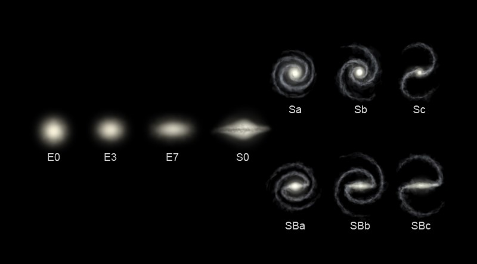
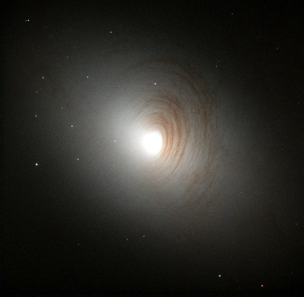

Tipos de galaxias de acuerdo al esquema de clasificación de Hubble.

La galaxia de Andrómeda, también conocida como Galaxia Espiral M31, Messier 31 o NGC 224, es una galaxia espiral con un diámetro de doscientos veinte mil años luz (en lo que concierne a su halo galáctico) y de unos ciento cincuenta mil años luz entre los extremos de sus brazos..

NGC 2787 está clasificada como una galaxia lenticular, lo que significa que tiene una forma parecida a una lente. Imágenes del Telescopio Espacial Hubble muestran una estructura espiral en filamentos de gas oscuro cerca del núcleo de la galaxia..